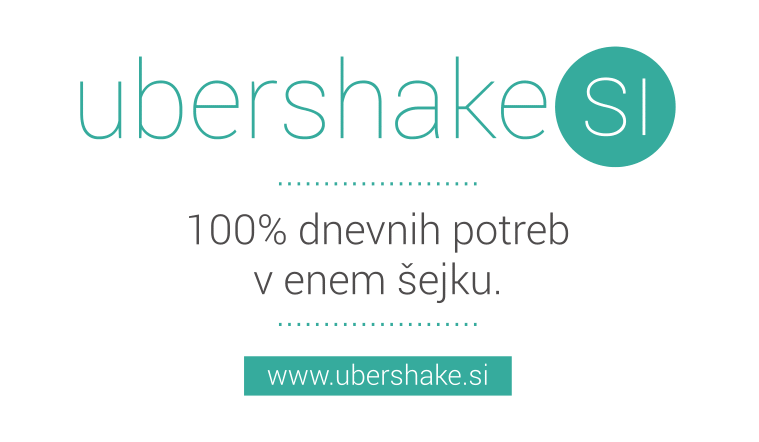

V Slovenijo prihaja soylent — ubershake.si
Soylent je, preprosto povedano, nadomestilo za hrano v obliki šejka. Nastal je kot eksperiment programerja, ki je o prehrani začel razmišljati iz znanstvenega stališča, torej kako dobiti točno to, kar potrebujemo, brez zapravljanja nepotrebnega časa in denarja. S preračunavanjem točnih količin vseh potrebnih vitaminov in mineralov ter z iskanjem možnih virov za njih, je prišel do napitka, podobnega sadnim smoothijem.
Projekt se je hitro razvil, pri tem je tudi ohranil računalniško logiko, iz originalne različice Soylent 1.0 smo danes pri Soylent 1.4, vmes so sodelovali tudi strokovnjaki na področju prehrane. Formulo in njene različice je njen ustanovitelj, Rob Rhinehart, po filozofiji odprte kode sproti objavljal v spletu, pred prvo splavitvijo je po skupinskem financiranju (»crowdfunding«) pridobil tudi nekaj zagonskega kapitala. Poleg originalnega izdelka Soylent (ta je sicer tudi zaščitena znamka) se je že pojavilo veliko drugih, ki za svojo osnovo uporabljajo njegov odprto-kodni recept.

Koncept izdelkov soylent je torej v tem, da nam v pomanjkanju časa ali volje ponudijo popoln in zdrav obrok. Za svoje jih je vzelo veliko razvijalcev, sploh tistih, ki jim v navalu delovnega zanosa navaden obrok predstavlja preveliko potrato časa in volje. V današnjem vse hitrejšem ritmu življenja si seveda ni težko predstavljati, da je potencialnih uporabnikov zelo veliko. Po prvi uradni splavitvi v ZDA pred dobrim letom dni so ti izdelki sedaj na voljo tudi v Sloveniji.
Na spletni strani Ubershake.si tako najdemo kar nekaj različnih soylentov, velja pa poudariti, da so vsi proizvedeni v EU. Šejki so cenovno zelo ugodni, tako v primerjavi s klasičnimi obroki kot v primerjavi z obstoječimi praški, ki so mišljeni kot prehrambna dopolnila. Trenutno ponujamo več okusov treh različnih evropskih znamk, možna je dostava po pošti, prevzem na GLS partnerskih mestih ali osebni prevzem v pisarni NiteoWeb d.o.o.
Že več kot 30.000 uporabnikov v Sloveniji, Srbiji in na Hrvaške danes uporablja SAOP-jeva produkta –ERP informacijski sistem iCenter za srednje velika in velika podjetja ali zavode ter najbolj priljubljen spletni računovodski program miniMAX za malo podjetje ali računovodski servis. SAOP bo v letošnjem letu predstavil novo generacijo produktov Saopnet, ki temeljijo na najsodobnejših tehnologijah, obenem pa so že napovedali tudi vstop na tržišče Turčije.
IŠČEMO
ZAHTEVANA ZNANJA
NUDIMO
Delo poteka primarno v pisarni v LJ, nekje med 6. uro zjutraj in 8. zvečer oz. kadarkoli na remote.
KONTAKT